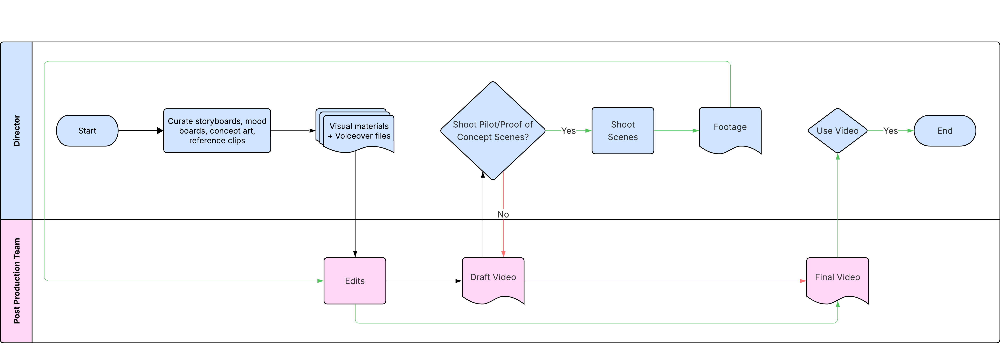
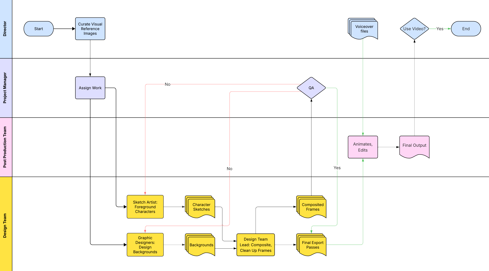
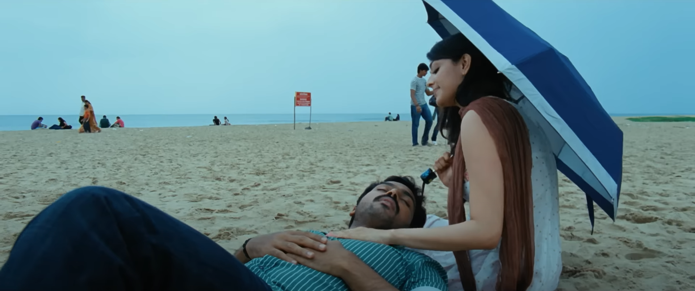
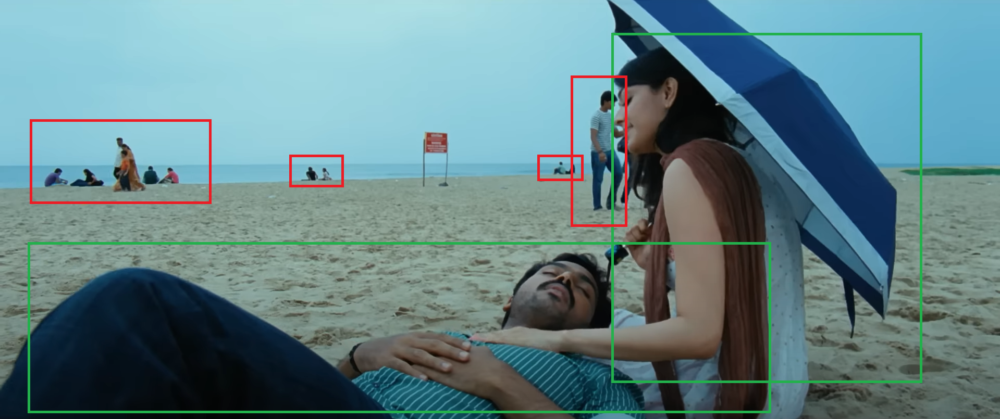

Gen-AI Service Blueprint for Film Pre-Production
Sample Images used in Case Study are for representative purposes only.
 •
•
Client: Fix It In Post Studios
•
Service Blueprints using FigJam, Adobe Suite
•
•
Client: Fix It In Post Studios
•
Service Blueprints using FigJam, Adobe Suite
Summary: Case Study detailing the Service Design of a Gen-AI-assisted Film Pre-Production workflow for Fix It In Post Studios, presented to studio directors.

Gen-AI dropped in Adobe Beta in May 2023; by July, we were making money with it.
I had been part of Fix It In Post Studios since 2020 and left in Aug 2021 to start my own UX consulting company. I returned to the studio in June 2023 for a short term freelance service design project. This project felt like stepping into the future of pre-production. The challenge was to explore Adobe Photoshop's Generative AI tool and design a workflow that could make concept videos faster and more precisely; while keeping humans at the center of the creative process.
By July 2023, we had a working AI-assisted workflow and had completed a client project.
Some might read through this and say, “This isn’t a fully automated AI workflow; what use is it?”
But even if it were fully automated, clients are often vague with instructions, and we would still have to spend hours reviewing the outputs and finetuning it. Reading some current research from 2025, we know that entirely AI-generated work is more time-consuming unless prompt design and output quality are optimized. (MITRIX, 2025; METR, 2025). What I’m proposing is removing the tedious task of creating generic background visuals that no one notices, so designers can focus on what matters most: the main characters and foreground elements.
Understanding the Challenge
As part of the Studio's Pre-Production support services for Film directors (including other services I created like pitch deck websites such as this), I led the development of a scalable, AI-assisted pitch video workflow.
When it comes to Indian film concept videos, the traditional process can feel like a maze. Ideas evolve constantly, goals remain unclear, and each round of client feedback can send the team back to square one. Timelines stretch out, frustration builds, and even the most talented directors and creatives struggle to stay aligned.
Having done this before with a lot of directors, a typical project followed this process:

Our goal was to change that. We wanted a process that moved faster and kept everyone on the same page, while also experimenting with AI to replace the mundane.
Designing the Workflow
We began by mapping the ecosystem; identifying stakeholders, systems, and touchpoints to understand the complexity of the pitch video environment.
Next, we created an initial concept workflow; small and testable. Real-time collaboration with a client allowed us to observe challenges directly and adjust processes immediately.
Logical Service Flow

Over multiple iterations, we refined a service blueprint; clarifying internal roles for directors, editors, designers, and coordinators, establishing clear handoffs, export conventions, and feedback loops, and continuously validating through observational research and team feedback.
This project was focused primarily on internal service design, refining workflows, roles, and a pilot application of this workflow,
serving as both a deliverable for Fix It In Post Studios and a validation of the AI-assisted process for their clients (Film and TV Directors, for the time being).
At the Design level
Sample Images used in Case Study are for representative purposes only. They were selected based on what could best explain the process well.
Director + Editor: selected visual references and defined tone and pacing.

PM & Design Team Lead: assigned work roles, breaking down assets and tasks for designers. Here, Red is to be removed, Green is to be kept.

Designers: used Gen-AI to mass-produce options and variants for environments, effects, and usable props while Sketch Artists made foreground elements and designed characters.


Design Lead: provided complete sets of composited images to PM; and provided organized, ready-to-animate file sets for the video editor.


Service Blueprint
The final blueprint reflects a tested system that balances operational discipline with creative freedom. The process depicted here has been rigorously validated over a 2.5-month period through research, observational studies, and workshops I facilitated. It documents workflows, responsibilities, handoffs, and AI integration in a human-centered way. Since its adoption, it has been actively used with minor updates to accommodate AI tool improvements and project-specific needs.

Impact & Future Considerations
The outcomes were tangible: